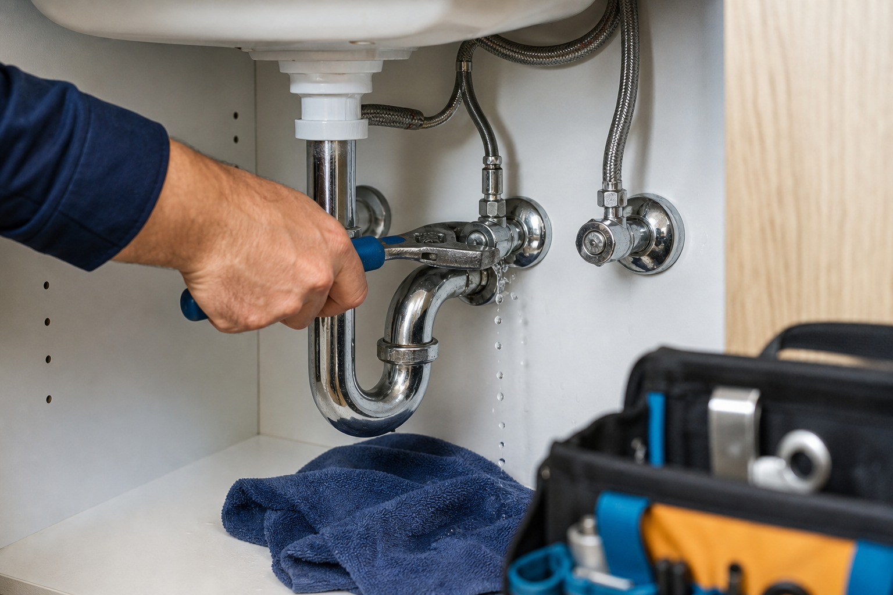
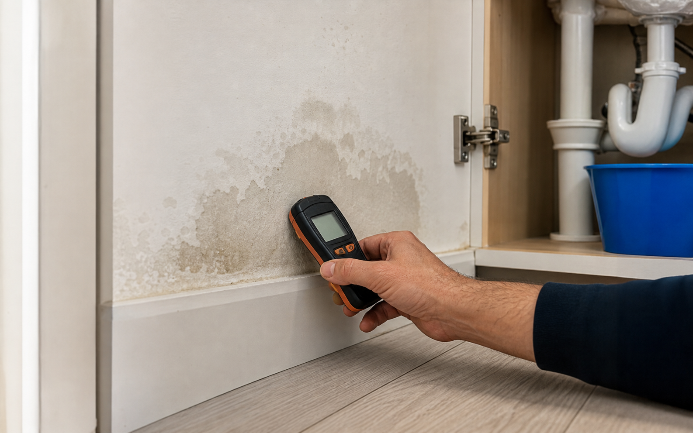
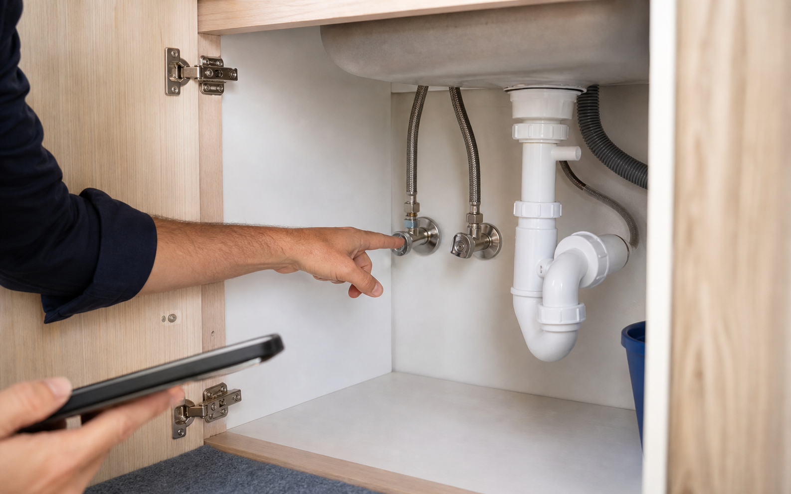
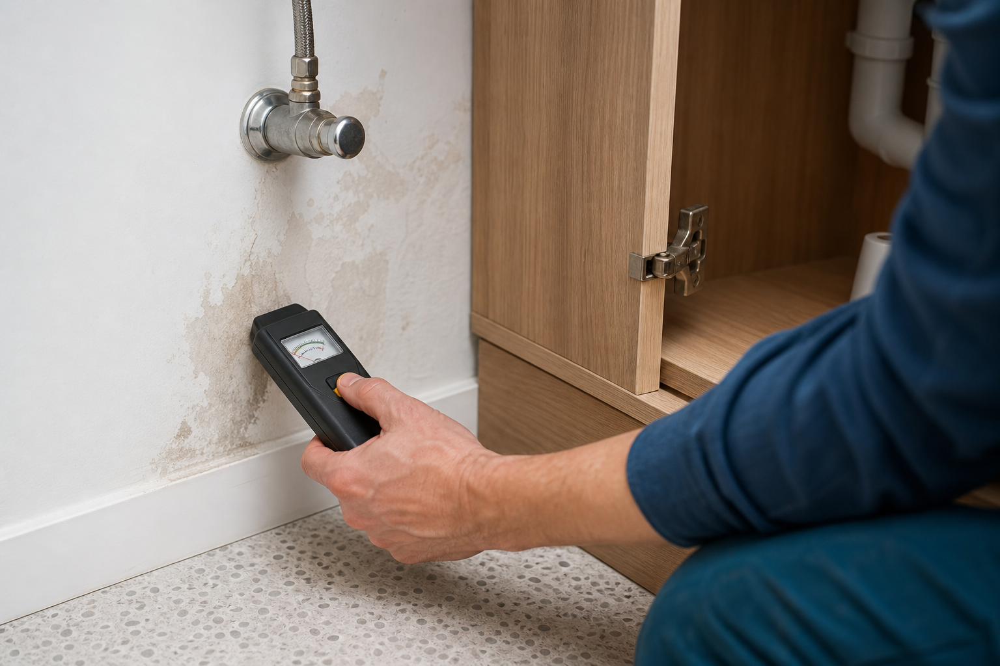

Water is actively escaping, sewage is present, a key fixture is unusable, or damage is spreading.
Whether water can be shut off, which rooms are affected, and whether anyone is dealing with unsafe conditions.
Response window, emergency pricing, temporary stabilization, follow-up repair, and what cleanup is not included.
Urgency is about impact, not panic
A plumbing issue becomes urgent when the home is taking damage, wastewater is involved, or a basic fixture cannot be used. The request should say what is happening now, whether it is getting worse, and what has already been done to limit water. If water is near electrical areas or sewage is present, safety comes before photos or cleanup.
Independent providers may handle urgent requests differently. Some may offer after-hours stabilization; others may provide the earliest regular opening. Customers should confirm response windows, emergency rates, and whether the first visit is meant to stop the problem, complete the repair, or both.


Information that speeds triage
When submitting an urgent request, the most important facts are whether water is actively flowing, whether a shutoff valve has stopped it, whether sewage is involved, and whether essential fixtures are unusable. Photos are useful, but personal safety comes first.
- Use the main shutoff if safe and necessary for active water flow.
- Avoid electrical areas affected by water.
- Stop using fixtures if sewage is backing up.
- Move valuables away from active water when safe.
- Document visible damage for provider and insurance discussions.
State whether water is flowing now, dripping slowly, or already stopped. This helps independent providers understand whether the request is about active containment, damage prevention, or a follow-up repair conversation.
Customers should mention whether a fixture shutoff, water heater shutoff, or main shutoff is accessible and whether using it changed the situation. Do not force a valve if it appears damaged or unsafe.
Sewage backup, strong odor, or contaminated water should be described clearly. These details may affect urgency, protective equipment, cleanup expectations, and whether another trade may be needed later.
Ask whether the provider conversation covers a temporary stop, a full repair, or diagnostic visit only. Emergency pricing, arrival windows, and included work are provider-specific and should be confirmed directly.

Details that make an urgent request clearer
The best urgent request is short but precise. Include the affected room, where water is coming from, whether the water has been stopped, and whether flooring, cabinets, ceilings, or electrical areas are involved.
- Current water status: active, stopped, or intermittent
- Room and fixture involved
- Shutoff valves tried and result
- Visible damage or safety concerns
Safety-first note
If water is near outlets, panels, ceiling fixtures, or appliances, customers should avoid contact with the affected area and consider utility or emergency guidance before waiting for a provider conversation.
FAQ
No. The platform routes requests where possible. Independent providers determine availability, response windows, and accepted jobs.
State that clearly during intake. If public infrastructure or unsafe conditions are involved, local utility or emergency services may be appropriate.
Yes. A provider may stabilize the issue first, then recommend a permanent repair or replacement after conditions are controlled.